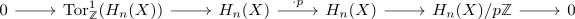

anima with trivial Q/Fp homology is acyclic
Proposition
Let $X$ be an anima such that
- $\tilde{H}_*(X, \mathbb{Q}) \cong 0$
- $\tilde{H}_*(X, \mathbb{Z}/p \mathbb{Z}) \cong 0$
Then $X$ is an acyclic anima.
Proof
Let $A = H_n(X, \mathbb{Z})$ for $n \geq 1$. Then the universal coefficient theorem shows that $H_n(X, \mathbb{Z})$ is necessarily uniquely divisible abelian group: This follows from the exact sequence

so each element in $H_n(X)$ is uniquely divisible, since the tor term contributes to $H_{n+1}(X, \mathbb{F}_p)$.
Hence $H_n(X, \mathbb{Q}) \simeq H_n(X) \otimes_{\mathbb{Q}} \mathbb{Q} \cong H_n(X)$. This shows - as desired - $H_n(X) \cong 0$.